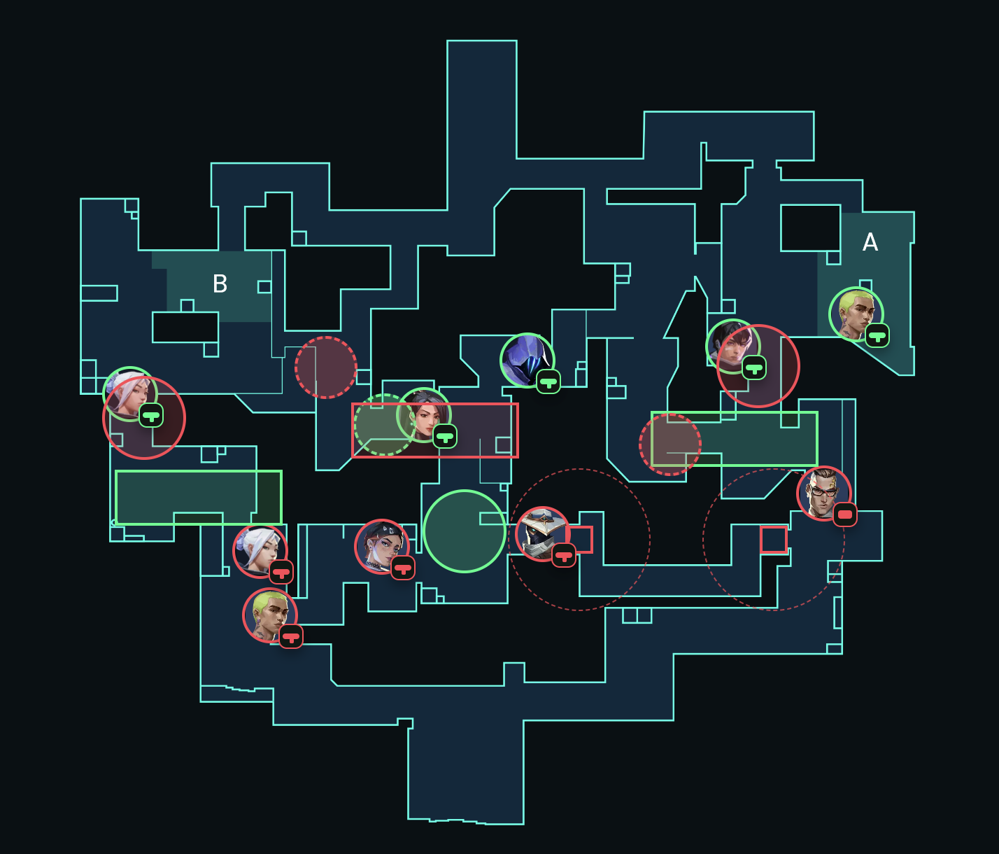
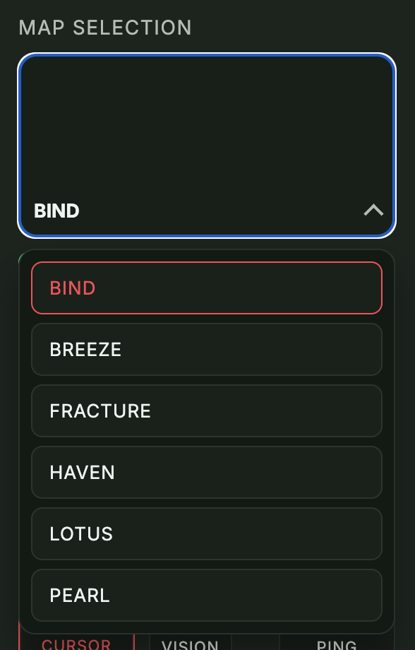
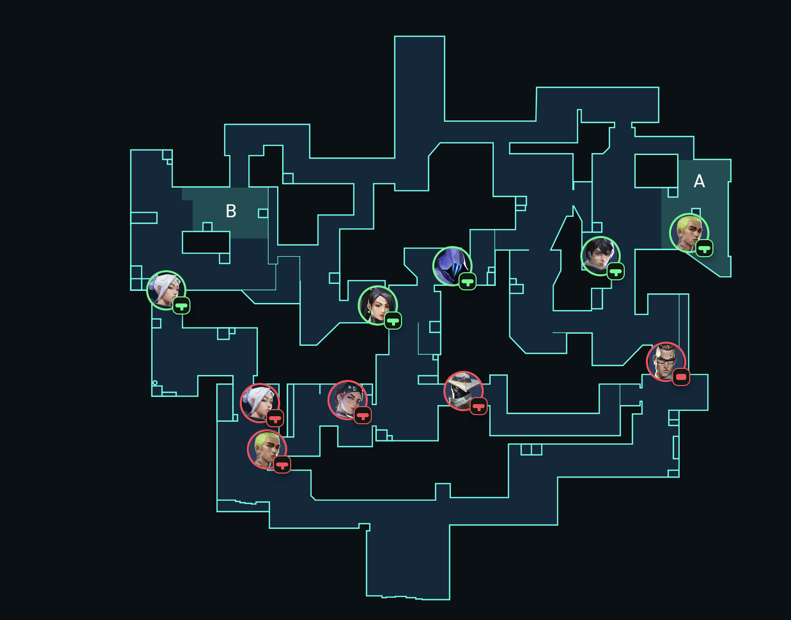
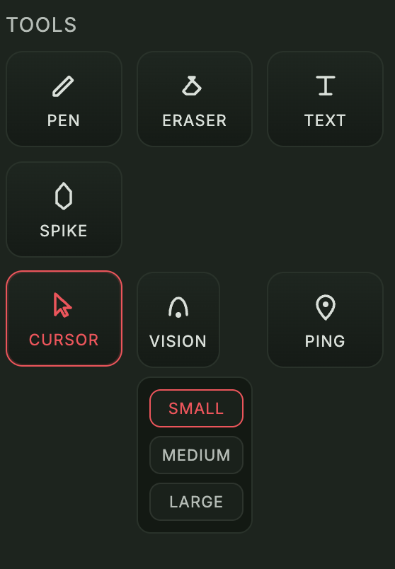
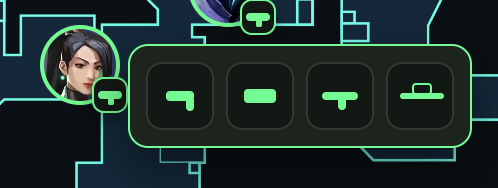

The Simulation
The backend resolves combat with a tick-based model. Weapon type, position, side, and utility state all shape combat power.
Tactical Strategy Sandbox
FPS Strat Simulator is a 2D planning workspace for tactical shooter rounds. It combines map control, placement tools, vision modeling, and combat simulation in one surface.
The backend resolves combat with a tick-based model. Weapon type, position, side, and utility state all shape combat power.
Multiple maps can be swapped from the dropdown. Each switch resets placed objects, drawings, and vision state.
Agents drop onto the board with weapons, sides, and utilities to model setups, site hits, and spacing.
Pen, eraser, text, spike, ping, and vision tools turn the map into a live planning canvas.
Feature Breakdown
Each system is built to turn a rough idea into a clear, executable round plan.
The Final Output
The end result is a fully designed strat board: agents, tools, utility timing, vision, and callouts organized into one readable plan for cleaner, more confident rounds.
showcase/demo/Full-designed-strat.png

Map Selection
The current map roster includes Bind, Breeze, Fracture, Lotus, Haven, and Pearl. Selecting a new map resets the workspace so each strategy starts from a clean layout.
showcase/demo/map-selection.png

Agent Placement
Agent tokens can be picked up, moved, and placed anywhere on the map. The interaction is direct and lightweight, making it easy to test spacing, defaults, site hits, and retake positions.
showcase/demo/setting-agents.png

Tactical Toolkit
The toolset includes a drawing pen, stroke eraser, plant spike, text boxes, dynamic vision cones, map pings, and a selection cursor for repositioning objects.
showcase/demo/tools.png

Weapon Loadouts & Simulation Engine
Agents can equip Pistols, SMGs, Shotguns, or Rifles. These choices are not cosmetic: the backend simulation uses weapon class, range, and angle state to calculate combat advantages.
showcase/demo/weapon-choosing.png
